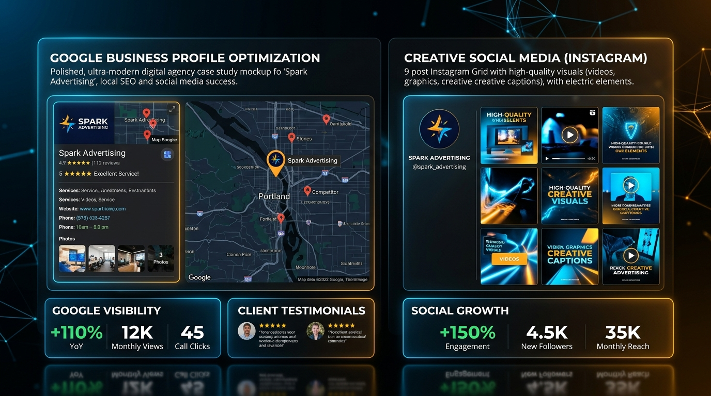

Spark Advertising
Focus: Digital Presence Development & Marketing
Project Objective:
Establish and strengthen Spark Advertising's digital presence, making its services easier to discover, understand, and engage with online. Build a consistent digital identity, improve service presentation, and create a foundation for customer enquiries.
Key Responsibilities
9 Core Deliverables
- Google Business Profile setup, optimisation, and maintenance.
- Creation and setup of relevant social media business accounts.
- Social media profile branding and information optimisation.
- Content strategy, planning, and calendar development.
- Social media post design and content creation.
- Caption writing, content publishing, and scheduling.
- Brand communication and service promotion.
- Audience engagement and community management.
- Digital marketing planning and performance monitoring.